The Phantom of PCs: Constraining Generative Artificial Intelligences for Practical Peripherals Trace Synthesizing
The Phantom of PCIe：约束生成式人工智能以实现实用的外设 Trace 合成
简介
论文解决生成式 AI 合成 PCIe TLP trace 时的'幻觉'问题：生成的序列统计上合理但违反 PCIe 协议的顺序（Order）、因果（causality）与报文尺寸约束，无法用于设备仿真与验证。方法上提出 Phantom 框架，采用 Generate-then-Calibrate 两阶段机制：先将 TLP 记录（大小、方向、时序）无损映射为 RGB 图像，用 GAN、VAE、LSTM、Stable Diffusion、GPT4o 等生成骨干学习流量分布；再由基于离散度的校准算法（DBTC）检测孤立'奇点'像素并用匹配的真实 trace 替换，强制协议合规。在真实 NIC 采集的约 3 万张 trace 图像上，任务特定指标较仅用生成骨干最高提升约 1000 倍，FID 最高改善 2.19 倍，且在流量趋势与报文比例上显著优于 HPCA'17 拟合、Thesios、NetShare、NetDiffusion 四种已有方法。框架已开源，并演示了 trace 数据增强、fuzzing 测试用例生成与对抗性故障注入 trace 三类验证应用。
问题
生成式 AI 直接用于 PCIe TLP trace 合成时会产生幻觉（hallucination）：生成统计上看似合理但违反 PCIe 协议基本规则（如 ordering、causality、128B 对齐描述符与 256B TLP payload 尺寸限制）的序列，破坏 NIC 状态机转换，使复制出的流量模式功能无效，无法用于高保真设备仿真。论文要解决如何在保留生成式 AI 学习复杂流量分布能力的同时，系统性消除这些协议违规，产出可用于回放式设备验证的实用 trace。
方法
Phantom 框架采用 Generate-then-Calibrate 机制，流水线分 1+3 阶段（生成、归一化、校准、解码）：(1) 目标建模：将 TLP 记录 S=(Sbyte, Sdir, Stime) 无损双向映射为 RGB 图像，水平像素位置编码时间顺序（以位置作逻辑时间索引、丢弃显式时间戳），把 trace 合成重构为时空模式/图像生成问题，复用成熟图像生成骨干（GAN、VAE、LSTM、Stable Diffusion、Llama、GPT4o 等，LLM 经 prompt engineering 集成而非微调）；(2) 校准：结合嵌入距离（MobileNet/InceptionV3/VAE-encoder/GAN 判别器等特征提取器 + 余弦相似度/PSNR）与逐像素距离的离散度评分（DBTC 算法），区分孤立异常'奇点'与整体模式偏移，超过阈值 λ 的像素用匹配真实 trace 的对应像素替换，从而过滤幻觉并强制协议合规。管线支持用户在各阶段介入，trace 与图像间严格可往返转换。
关键结果
任务特定指标 Transmission Package Error（PE）较仅用生成骨干（backbone-only）最高提升约 1000 倍；VAE 与 LSTM 骨干经校准后 PE 常被完全消除（零 PE）
Fréchet Inception Distance（FID）较 backbone-only 方法最高改善 2.19 倍
与 HPCA'17 拟合重采样、Thesios 拼接、NetShare（GAN）、NetDiffusion（Diffusion）四种方法对比，仅 Phantom 合成的 trace 在流量趋势与报文比例上与 ground truth 在所有时间点吻合
在约 30,000 张图像数据集（browsing、gaming、streaming、VNC、web crawling 工作负载）上训练/微调多种生成器；Stable Diffusion 与 GPT4o 经校准后 FID 呈下降收敛趋势
概念验证：合成 in-flight 流量短暂超过 4KB 限制的对抗性 trace，配合软硬件回放工具实现反事实故障注入
创新点
据论文所述，此前没有专门针对 PCIe 设备 trace 合成的工作：传统统计拟合/重采样方法难以捕捉复杂模式，规则方法缺乏灵活性，而直接套用生成式 AI（如 NetShare、NetDiffusion）无法将 PCIe 环境的严格约束映射进生成过程。Phantom 的核心区别是不把协议约束塞进生成模型本身，而是提出 Generate-then-Calibrate：用领域知识驱动的后处理过滤器（离散度奇点检测 + 真实样本替换）系统性消除幻觉；同时提出 PE/TE 两个面向协议合理性的新评价指标，并将 trace 合成重构为图像生成任务以复用成熟图像生成骨干。
团队参考意义
相关度级别：high
命中能力域：2.4 设计验证方法学 | 2.7 EDA/验证自动化与 AI 辅助
理由：团队负责 UCIe 等高速互连与 LPDDR/HBM4/DDR5 等内存 IP 的验证交付，'生成协议合规的大规模真实流量激励'是验证平台的核心工程场景。论文直接命中 2.4：trace 合成用于 in-house device validation and simulation、fuzzing 测试用例生成、对抗性故障注入 trace 合成，均为典型验证场景；同时命中 2.7：以生成式 AI（含 LLM prompt engineering）+ 协议约束后处理过滤器构成可复用、已开源的自动化激励生成框架。Generate-then-Calibrate 的'生成骨干 + 领域约束后处理'范式可迁移到团队协议（UCIe/LPDDR/HBM）的激励合成与数据增强，PE/TE 指标也提供了量化激励协议合理性的思路。需注意论文工作在软件层 TLP 流级 trace，非周期级 RTL 激励，落地需适配。
建议动作：深入精读并做内部分享
中文全文
arXiv:2411.06376v3 [cs.LG] 2026年4月11日
The Phantom of PCIe: Constraining Generative Artificial Intelligences for Practical Peripherals Trace Synthesizing
Zhibai Huang 1 , Chen Chen 1 , James Yen 1 , Yihan Shen 2 , Yongchen Xie 1 , Zhixiang Wei 1 , Kailiang Xu 1 , Yun Wang 1 , Fangxin Liu 1, * , Tao Song 1 , Mingyuan Xia 3 , Zhengwei Qi 1,*
1 Shanghai Jiao Tong University, China 2 Chinese Academy of Sciences, China 3 UltraRISC, China
Email: {paynqueller, chenchen825, jamesyen2202002}@sjtu.edu.cn, shenyihan@lsec.cc.ac.cn, xyc007@alumni.sjtu.edu.cn, {tonywei_sjtu, xukl2019, yunwang94, liufangxin, songt333}@sjtu.edu.cn, xiamy@ultrarisc.com, qizhwei@sjtu.edu.cn
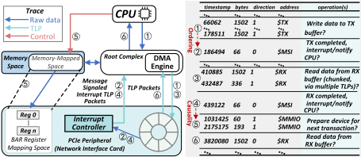
Crucially, these patterns can be synthesized into replay-capable traces for in-house device validation and simulation.
PCIe TLP traces are also complex and restrictive. Consider Fig. 1, which illustrates the interaction between a PCIe Network Interface Card (NIC) and the CPU. NICs enforce critical PCIe transaction constraints: Order (e.g., DMA engine enablement after descriptor ring configuration), causality (interrupt status clearance before new IRQ generation), and size limits (128B-aligned descriptors; 256B TLP payloads). Violating these during trace synthesis corrupts NIC state transitions and renders replicated traffic patterns non-functional. These rigid constraints are precisely where naive generative models fail, as they struggle to learn such deterministic, long-range dependencies, leading to protocol-violating hallucinations.
Traditional statistical-based methods for synthesizing traces often fall short of capturing these complex patterns [5], and rule-based approaches lack flexibility [9, 11, 15]. Generative AI, assuming sufficient input data, presents a powerful alternative [17, 18]. However, its direct application is hampered by hallucination-the tendency to generate statistically plausible but functionally invalid sequences that violate strict protocol rules, making them useless for highfidelity device simulation. To bridge the gap between generative AI and device simulation, we introduce Phantom, a framework embodying a novel methodology for constrained TLP synthesis. As illustrated in Fig. 2, Phantom operates independently of the target machine, accepting collected traces to produce synthesized output suitable for replay-based design prototyping.
ThekeytoPhantom's methodology is a Generate-then-Calibrate mechanism: a generative AI backbone learns the data distribution, followed by a content calibration post-processor that filters hallucinations and enforces protocol compliance. As depicted in Fig. 3, this
Abstract
外围组件互连快速总线（PCIe）是高速外设与CPU之间事实上的互连标准。面向新兴应用的PCIe设备开发需要能够准确模拟设备与CPU交互的真实事务层报文（TLP）踪迹。尽管生成式人工智能为合成复杂的TLP序列提供了一条富有前景的途径，但它容易受到所有生成任务中固有的一项关键挑战的影响：幻觉。简单地直接应用这些模型往往会产生违反PCIe基本协议规则（如排序和因果性）的踪迹，使其无法用于设备仿真。为解决这一问题，我们的工作提出了一种方法学，以弥合生成式人工智能与高保真设备仿真之间的鸿沟。本文提出Phantom，一个系统性地解决TLP合成中AI生成幻觉问题的框架。Phantom通过将生成式骨干网络与一种新颖的后处理过滤器相耦合来实现这一目标，该过滤器强制执行PCIe特定约束，从而有效消除无效的TLP序列。我们通过为一块实际的PCIe网络接口卡合成TLP踪迹来验证Phantom的有效性。实验结果表明，Phantom能够生成实用的大规模TLP踪迹，性能显著优于现有模型；与仅使用骨干网络的方法相比，在任务特定指标上提升高达1000 ×，在Fréchet Inception Distance（FID）上提升高达2.19 ×。原型实现已开源。
CCS Concepts
· 硬件 → 总线与高速链路；仿真与模拟；软硬件协同设计；· 计算方法学 → 机器学习。
1 Introduction
PCIe is the most common interconnection network for peripherals and hosts and is essential for devices like graphics cards, SSDs, and network interface cards. In the PCIe standard, Transaction Layer Packets (TLPs) are the smallest units of information transmitted between PCIe devices [6]. Understanding a device's TLP transaction patterns from detailed, driver-level traces is crucial for modeling its CPU interaction dynamics and guiding architectural design [8, 10].

This work is licensed under a Creative Commons Attribution 4.0 International License.
DAC '26, Long Beach, CA, USA © 2026 Copyright held by the owner/author(s). ACM ISBN 979-8-4007-2254-7/2026/07
https://doi.org/10.1145/3770743.3803983
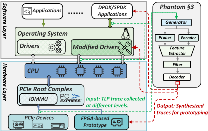
is achieved by first redefining TLP synthesis as an image generation task via a mapping to RGB triplets. A novel convolution-like filter then applies domain expertise to correct the generated trace, effectively removing hallucinated data (later defined as singularities) before a final decoding stage. The key contributions of our work can be summarized as follows:
Extensive experiments show that Phantom enhances task-specific metrics by up to ∼ 1,000 × and improves the Fréchet Inception Distance (FID) by up to 2.19 × . We have open-sourced the Phantom framework, excluding only the pretrained AI model weights and large language models. The pretrained weights used in our experiments are publicly accessible from their original sources, and the LLMs (such as Llama and GPT4o) are integrated via prompt engineering rather than fine-tuning, ensuring reproducibility of our workflow.
2.1 PCIe and Other Interconnects
高速外设组件互连（PCIe）架构采用分层设计，主要由物理层（PLP）、数据链路层（DLLP）和事务层（TLP）组成。物理层负责电信号的发送与接收，确保高速串行数据传输的稳定性。数据链路层通过处理错误检测与纠正来确保可靠的数据传输，保证数据包按正确的顺序到达。事务层管理更高层的协议，例如内存读写和 I/O 操作，并将请求转换为数据包。
由于 PCIe 的复杂性，大多数其他总线（例如通用异步收发器（UART）、通用串行总线（USB））在一定程度上都可以映射到 PCIe TLP 轨迹中的特定模式。从本质上讲，所有外设通信归根结底都是内存映射 I/O（MMIO）或端口 I/O（PIO）交互，这意味着内存访问轨迹理论上可以在软件层获取。这使得所提出的方法（见第 3 节）能够得以应用，尽管其有效性可能存在差异。这种适应性意味着 Phantom 只需进行极少的调整即可适应大多数总线类型的轨迹合成，从而使其更具通用性。
2.2 Trace Synthesis Methods in Related Fields
轨迹合成是一个已经相当成熟的研究领域，现有研究已探索了多种方法。这些方法大致可以归纳为三大类：
目前，尚无专门针对 PCIe 设备轨迹的研究工作。现有方法无法直接应用，因为忽视 PCIe 设备的严格约束会导致人工智能（AI）幻觉，从而生成严重失真且在功能上毫无价值的轨迹。
3.1 Target Modeling
PCIe 事务层包（Transaction Layer Packet, TLP）轨迹是系统调试与性能优化的核心，因为它们捕获了事务类型、地址、载荷大小、方向和时序信息。虽然高保真的采集通常依赖于专用硬件，但本工作聚焦于在软件层合成与分析流级的 PCIe TLP 流量。
与常规生成任务不同，轨迹合成必须严格遵循协议语义与系统级因果关系。我们将轨迹生成重新表述为一个时空模式合成问题：TLP 序列被映射为二维图像，其中像素编码每笔事务的属性（例如访问大小与方向），顺序关系转化为空间布局，而协议/因果关系则以空间模体和簇的形式呈现。这种视觉抽象既带来了人类可解释性，又使得可以采用成熟的图像生成/处理骨干网络来实现可控的、约束感知的合成。
3.2 Design of Phantom
Phantom 以流水线方式利用通用骨干网络生成原始内容，随后将其与真实轨迹进行校准，以强制实现符合协议的模式。该设计集成了面向 TLP 轨迹的无损视觉表示以及基于离散度的校准。
PCIe 的 Phantom：约束生成式人工智能以实现实用的外设轨迹合成
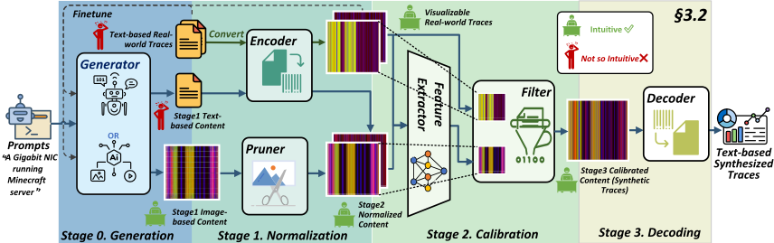
| MineCraft.log.Volume | MineCraft.log.Direction | MineCraft.log.Timestamp | |
|---|---|---|---|
| 1330 | 0 | #1 | |
| 768 | 0 | #2 | |
| 60 | 1 | #3 | Encode |
| 790 | 1 | #4 | |
| … | … | … | |
| 370 … | 1 … | #n … | Decode |
| MineCraft.log.Volume | MineCraft.log.Direction | MineCraft.log.Timestamp | |
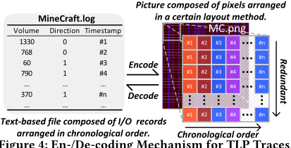
记录为 𝑆 𝑖 = ( 𝑆 byte 𝑖 , 𝑆 dir 𝑖 , 𝑆 time 𝑖 )，其中 𝑆 byte 𝑖 为字节大小，𝑆 dir 𝑖 ∈{ 0 , 1 } 表示方向。由于真实轨迹是按时间排序的，我们复用自然顺序并舍弃显式时间戳；位置充当逻辑时间索引。到 RGB 的双向映射为
式 (1) 的逆运算十分直接，可实现事务三元组与 RGB 像素之间的无损转换。我们使用水平像素位置来编码时间先后顺序，并采用列向冗余（同一列内的像素相同）以增强鲁棒性。图 4 展示了该编码/解码机制。
令 𝑥 和 𝑦 为式 (1) 之后的张量。特征提取器 ⟨·⟩ 生成嵌入 𝑥 enc = ⟨ 𝑥 ⟩ 和 𝑦 enc = ⟨ 𝑦 ⟩；定义嵌入距离 𝑑𝑖𝑠𝑡 enc = dist enc ( 𝑥 enc , 𝑦 enc )（例如余弦距离）。对于通道加权的像素距离，令 𝛼 ∈ R 3 > 0：
在所有像素位置 ( 𝑙, 𝑚 ) 上，定义
𝑀 = max 𝑙,𝑚 𝑑𝑖𝑠𝑡 pix ( 𝑥 𝑙,𝑚, : , 𝑦 𝑙,𝑚, : ) , 𝑚 = min 𝑙,𝑚 𝑑𝑖𝑠𝑡 pix ( 𝑥 𝑙,𝑚, : , 𝑦 𝑙,𝑚, : ) . (3) 令 𝑛 -邻域为 𝐵 𝑛 ( 𝑙, 𝑚 ) = {( 𝑙 0 , 𝑚 0 ) | | 𝑙 - 𝑙 0 | ≤ 𝑛, | 𝑚 - 𝑚 0 | ≤ 𝑛 }，𝛽 ∈ R 3 > 0 为局部权重。我们将 ( 𝑙, 𝑚 ) 处的离散度得分定义为
Algorithm 1 Dispersion-Based Trace Calibration (DBTC) Input : normalized generated image 𝑥 , matched real image 𝑦 , threshold 𝜆 , weights 𝛼, 𝛽 Output : calibrated image res 1: compute 𝑑𝑖𝑠𝑡 enc = dist enc (⟨ 𝑥 ⟩ , ⟨ 𝑦 ⟩) 2: compute per-pixel 𝑑 𝑙,𝑚 = 𝑑𝑖𝑠𝑡 pix ( 𝑥 𝑙,𝑚, : , 𝑦 𝑙,𝑚, : ) via (2); get 𝑀 = max 𝑑 𝑙,𝑚 , 𝑚 = min 𝑑 𝑙,𝑚 3: for each pixel ( 𝑙, 𝑚 ) do 4: sgl 𝑙,𝑚 ← Eq. (4) , res 𝑙,𝑚, : ← 𝑦 𝑙,𝑚, : , sgl 𝑙,𝑚 > 𝜆 𝑥 𝑙,𝑚, : , otherwise 5: end for 6: return res
直观地说，第一个因子以全局失配作为门控；第二个因子利用邻域能量对局部偏差进行归一化，使得孤立的离群点得以凸显，而整体一致的大偏差（图案偏移）则不会被过度惩罚。对于满足 sgl 𝑙,𝑚 > 𝜆（阈值）的像素，将用 𝑦 中对应的像素加以替换。
这一集成流水线允许用户在任意阶段进行干预，并保持轨迹与图像之间严格的往返可转换性，从而实现对骨干模型的最大化控制。
3.2.4 开销。运行时开销。唯一的运行时开销来自轨迹化机制。通过使用一小组具有代表性的轨迹并结合生成式合成，我们的方法避免了持续的高保真数据采集，从而确保了实用性。
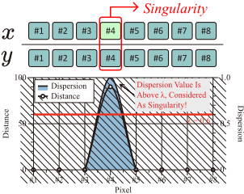
(a) 情形 1：某一像素的距离骤增而其邻近像素的距离较小 ⇒ 离散度大 → 奇异点。
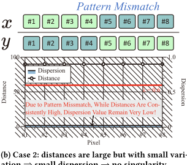
(b) 情形 2：距离较大但变化很小 ⇒ 离散度小 → 无奇异点。
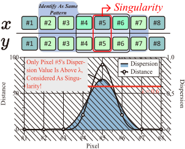
(c) 情形 3：若干像素的偏差远大于其邻近像素 ⇒ 离散度大 → 多个奇异点。
开发开销。开发阶段需要对骨干模型进行一次性适配（例如通过微调或提示工程）。这一初始成本由校准流水线摊销，该流水线强制保证图案符合协议一致性，同时将重新训练的需求降至最低。
4.1 Experimental Setup
我们在用于收集数据集的 X86 机器上评估 Phantom，设置像素距离 𝛼 ∈ { 1 , 100 , 10000 }（式 2）、离散度 𝛽 ∈ 1 12 , 1 6 , 1 2 , 1 6 , 1 12（式 4），以及从 1 递减至 1 × 10 - 10 的接受阈值。Phantom 集成了一套多样化的生成器，包括生成对抗网络（GAN）、变分自编码器（VAE）、长短期记忆网络（LSTM），以及 Stable Diffusion [12]、Llama [16] 和 GPT4o [1] 等经过微调的基础模型，此外还包括在我们涵盖浏览、游戏、流媒体、VNC 和网页爬取工作负载的约 30,000 张图像数据集上训练的其他模型。在特征提取方面，我们比较了五种不同的模型——朴素（N）、MobileNet（M）、InceptionV3（I）、VAE 编码器（V）和 GAN 判别器（G）——并以余弦相似度（c）和峰值信噪比（PSNR）（p）作为相似性度量。
4.2 Evaluation Metrics
To quantify the extent of AI hallucination in this domain, we design two new evaluation metrics (Transmission Package Error and Transmission Traffic Error). These metrics are tailored to assess the protocol rationality and correctness of generated TLP transactions, effectively measuring the severity of hallucinations. The definitions of two metrics are as follows:
Transmission Package Error ( PE ) and Transmission Traffic Error ( TE ) are defined as:
Where, w 𝑡 is the penalty weight for total throughput or wrong direction. w 𝑗 is the penalty weight vector for each segment, including w 𝑗, 0/ w 𝑗, 1 for the send/receive directions respectively. w total , dir is the penalty weight for the total send/receive direction. Dsynth , dir , 𝑗 ,𝑖 and Dreal , dir , 𝑗 ,𝑖 are the synthetic and real data at the 𝑖 -th time frame,
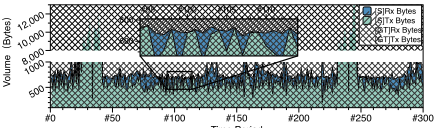
𝑗 -th segment, and dir direction. The difference between synthetic and real data is ∆ dir , 𝑗 ,𝑖 = Dsynth , dir , 𝑗 ,𝑖 - Dreal , dir , 𝑗 ,𝑖 . 𝑇 is the number of time frames, and 𝑚 is the number of segments.
We also use Fréchet Inception Distance (FID) [3] for the traditional generative task metric. To calculate PE and TE , each generated image is compared to the closest real content, as identified by the feature extractor. A batch of four generated images is processed alongside the real trace dataset to compute the FID score. Transmission errors are then obtained by taking the harmonic average of the four images. We prioritize minimizing TE , which is considered the most important of the three metrics.
From a semantic standpoint, the three metrics we adopt each assess the statistical similarity between a synthesized trace and the chosen real benchmark trace along a distinct dimension. The PE and TE quantify discrepancies in traffic dynamics and workload composition, respectively, while the FID measures divergence between the synthesized trace and a set of real traces within a common projection space. Hence, superior performance on these metrics implies-statistically-that the synthesized trace more closely resembles the benchmark trace, i.e., it appears more 'realistic.'
4.3 Example Applications of Phantom
4.3.1 轨迹数据增强。作为一种轨迹合成器，Phantom 最基本的用例是从部分现有数据中快速且准确地生成高质量轨迹，从而扩充轨迹数据集。我们使用所收集数据的一个子集以及指定的校准样本训练了一个基于扩散模型的骨干生成器，用于合成新的轨迹文件。图 6 所示的结果表明，合成轨迹在整体流量趋势和比例上与目标校正文件相似，尽管二者并不完全相同。这一结果凸显了使用 Phantom 进行数据增强的可行性。
The Phantom of PCIe：约束生成式人工智能以实现实用的外设轨迹合成
| Type.Type | Generator.Generator | Extractor.Baseline ( PE ) | Extractor.Attempt | Extractor.N+c | Extractor.N+p | Extractor.M+c | Extractor.M+p | Extractor.I+c | Extractor.Methods I+p | Extractor.V+c | Extractor.V+p | Extractor.G+c | Extractor.G+p |
|---|---|---|---|---|---|---|---|---|---|---|---|---|---|
| Worst Case | Random | 2611.6 | best ↓ worst ↓ avg ↓ | 20.5 × 14.2 × 17.6 × | 123 × 46.6 × 88.9 × | 791 × 263 × 428 × | 791 × 169 × 372 × | 263 × 70.2 × 137 × | 339 × 87.6 × 204 × | 593 × 24.3 × 356 × | 593 × 24.3 × 356 × | 339 × 47.3 × 188 × | 296 × 17 × 166 × |
| Common Image Generators | GAN | 2351.5 | best ↓ worst ↓ avg ↓ | 783 × 167 × 517 × | ✓ ✓ - | 783 × 391 × - | 783 × 391 × - | ✓ ✓ - | ✓ ✓ - | ✓ ✓ - | 783 × 783 × 783 × | ✓ 783 × - | ✓ 783 × - |
| Common Image Generators | VAE | 695 | best ↓ worst ↓ avg ↓ | ✓ ✓ - | ✓ ✓ - | ✓ 315 × - | ✓ 315 × - | ✓ ✓ - | ✓ ✓ - | ✓ ✓ - | ✓ ✓ - | ✓ ✓ - | ✓ ✓ - |
| De-facto Image Generator | SD | 2473.1 | best ↓ worst ↓ avg ↓ | ✓ 160 × - | 449 × 37.4 × 226 × | 749 × 89.9 × 259 × | 749 × 60.7 × 259 × | 281 × 68.1 × 175 × | 281 × 68.1 × 173 × | 1124 × 28.0 × 330 × | 1124 × 28.0 × 337 × | 2248 × 36.6 × 648 × | 1124 × 18.1 × 359 × |
| Common Text Generator | LSTM | 5915.8 | best ↓ worst ↓ avg ↓ | ✓ ✓ - | ✓ ✓ - | ✓ ✓ - | ✓ 493 × - | ✓ 493 × - | ✓ ✓ - | ✓ ✓ - | ✓ ✓ - | ✓ ✓ - | ✓ ✓ - |
| Large Language Model | Llama | 1843.3 | best ↓ worst ↓ avg ↓ | 4.78 × 3.61 × 4.19 × | 6.92 × 24.2 × 15.5 × | ✓ 279 × - | ✓ 279 × - | ✓ 15.1 × - | 6.92 × 4.86 × 5.89 × | 29.2 × 837 × 433 × | 29.2 × 837 × 433 × | ✓ 455.0 × - | 279 × 23.9 × 152 × |
| Large Language Model | GPT4o | 834.3 | best ↓ worst ↓ avg ↓ | 12.9 × 9.98 × 11.1 × | 11.9 × 9.60 × 11.2 × | 12.6 × 12.4 × 12.6 × | 17.6 × 12.4 × 14.1 × | 21.1 × 11.7 × 15.1 × | 21.1 × 10.5 × 14.3 × | 13.9 × 12.0 × 12.7 × | 13.3 × 10.1 × 12.4 × | 12.0 × 10.1 × 11.7 × | 14.3 × 9.85 × 11.7 × |
| Type.Type | Generator.Generator | Extractor.Baseline ( PE ) | Extractor.Attempt | Extractor.N+c | Extractor.N+p | Extractor.M+c | Extractor.M+p | Extractor.I+c | Extractor.Methods I+p | Extractor.V+c | Extractor.V+p | Extractor.G+c | Extractor.G+p |
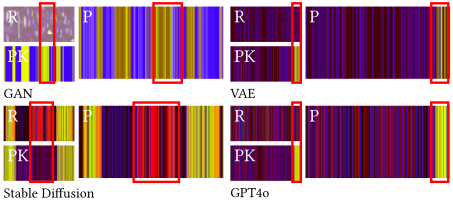
4.3.2 高效的模糊测试用例生成。模糊测试（fuzzing）的主要挑战之一是高效地指定测试用例，因为大量无意义或冗余的测试用例会显著增加测试开销。Phantom 能够合成在量化指标上接近用户指定测试用例的样本。如图 7 所示，最终合成的样本呈现出原始生成内容中不存在的模式，证明了 Phantom 高效生成模糊测试用例的能力。
4.3.3 合成对抗性轨迹。Phantom 可以通过提供一个带有期望异常的范例并降低阈值 𝜆 来刻意合成对抗性轨迹。随着 𝜆 的减小，生成的轨迹向范例收敛，逐步嵌入被禁止的模式。在驱动程序层面，向原本正常的运行过程中插入短暂的故障片段，使 Phantom 能够模拟软件可检测的错误。由于捕获的轨迹纯粹处于软件层面，依赖于硬件损坏或 DMA/IOMMU 流量的故障无法被复现，除非提供硬件层面的轨迹。在一项概念验证（图 12）中，Phantom 创建了一条在途流量短暂超过 4 KB 限制的轨迹，展示了其与硬件/软件回放工具配合使用时在反事实故障注入方面的实用性。
4.4 Comparison with Traditional Trace Synthesis Methods
如前所述，目前缺乏专门聚焦于 PCIe 轨迹生成的研究。我们参考了来自其他领域的轨迹生成方法，并仅以极小的改动将其适配用于 PCIe 事务层包（TLP）轨迹合成。
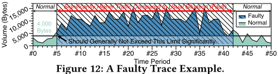
所选用于对比的方法包括：1). 拟合与重采样（HPCA'17 [9]）2). 拼接（Thesios [11]）3). 基于生成对抗网络（GAN）的生成式人工智能（NetShare [17]）4). 基于扩散模型的生成式人工智能（NetDiffusion [7]）。在实验设置方面，所有合成器均使用相同的数据集进行拟合、训练或微调。具体而言，拟合模型采用了隐马尔可夫模型，定制的 GAN 采用了与 NetShare 相同的架构，而定制的扩散模型则保持了与 NetDiffusion 一致的架构。对于 Phantom，超参数 𝜆 被设置为 1 × 10 - 2，其余参数与先前实验保持一致。
如图 8 所示，只有 Phantom 合成的轨迹在所有时间点上都在流量趋势和数据包占比两方面与真实轨迹（ground truth）高度吻合。相比之下，其他合成器则表现出不同程度的内容失真。我们将这一差异归因于现有方法无法将 PCIe 环境固有的约束有效映射到轨迹生成过程中。
4.5 Measuring Trace Synthesizing Capability
4.5.1 任务特定指标实验。我们通过评估 Phantom 相对于使用未经校准的骨干生成器时的性能，来测试其纠正 AI 幻觉的能力。实验评估了多个神经网络生成器以及一个接受阈值为 1 × 10 - 8 的基线随机生成器。如表 1 所示，PE 通常可获得两位数的改善。对于 VAE 和 LSTM，Phantom 常常能消除 PE，即通过使用真实数据纠正奇点，有效移除了所有检测到的幻觉。经过微调的特征提取器表现更佳，这凸显了使用相似的真实轨迹（ground truth）数据进行校准的价值。
关于 TE，如图 9 所示，其趋势与 PE 结果相一致。校准后，Stable Diffusion 和 LSTM 具有最低的 TE，这与它们具有最低的 Package Error 相符。图像生成模型由于能够有效捕获 TLP 模式而表现更好。
4.5.2 消融实验。为评估 Phantom 各组件对生成质量的影响，我们在 Time Period N+c N+p M+c M+p I+c I+p V+c V+p G+c G+p 不同设置下对若干案例进行了测试。我们选择了最能优化 TE 的特征提取器配置。如图 10 所示，Phantom 在 FID 上的表现似乎欠佳。这是因为 FID 指标并非为 TLP 轨迹生成任务而设计，而且我们的配置是为最小化 TE 而非 FID 进行优化的。值得注意的是，仅添加用于校准的过滤器并不总能提升性能，因为所使用的先验知识样本可能与生成内容差异过大。然而，借助嵌入匹配（embedding matching），两者之间的相似度显著提升，使校准更加有效，从而带来了大幅改进。
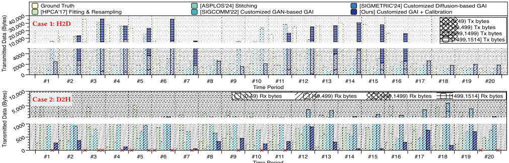
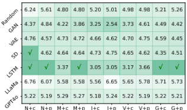
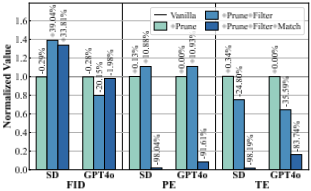
4.5.3 生成质量收敛性。如图 11 所示，除最坏情况的随机生成外，Stable Diffusion 和 GPT4o 在经过 Phantom 校准后均呈现出 FID 下降的趋势。这证明了 Phantom 能够使生成内容更贴近符合用户需求的真实 TLP 轨迹。
5 Discussions
在模拟器或不同设备上进行验证。基于重放的验证将增强评估的说服力。当前硬件在根复合体（root complex）和端点（endpoint）上均缺乏原生的 PCIe 追踪支持，而 FPGA 原型验证在轨迹保真度和吞吐量方面仍有所不足。作为一种实用的替代方案 [2, 13]，我们目前采用基于 MMIO/PIO 的软件级追踪，该方法广泛适用于各类 PCIe 设备，并适用于 VirtIO 等仿真环境，尽管它可能无法捕获所有硬件特定的时序伪影。未来工作。Phantom 的设计可适配到其他领域，类似的生成与校准方法也可应用于其他
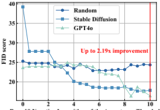
总线或网络。我们计划探索将 Phantom 适配到 Kubernetes 和 SCSI 硬盘。为了实现更有针对性的性能分析，我们还计划引入诸如频率和延迟之类的额外参数。
6 Conclusion
我们提出了 Phantom，这是一个新颖的框架，通过解决 PCIe TLP 踪迹合成过程中的 AI 幻觉问题，使生成式 AI 在设备仿真中变得实用。Phantom 方法的核心是一个两阶段流程：由生成式骨干网络生成踪迹数据，随后由领域专用的后处理过滤器对其进行精炼。该过滤器强制执行严格的协议合规性，保证最终输出在功能上有效。通过对真实 NIC 踪迹的评估，我们表明 Phantom 显著缓解了幻觉问题，在任务特定指标上比仅使用骨干网络的方法最高提升 1000 ×，在 Fréchet Inception Distance 上最高提升 2.19 ×。因此，所生成的踪迹既在统计上忠实，又可直接用于高保真仿真。
证据核查
1 条证据未在原文中核对到